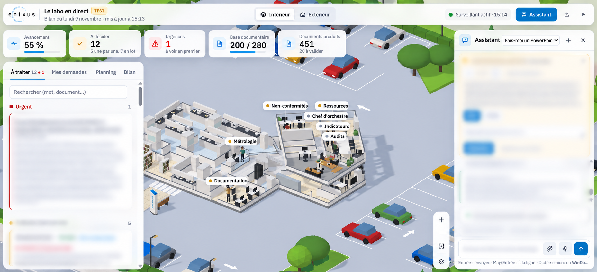

Enixus AI
Agents IA qui assurent le travail de bureau d'une Responsable Qualité dans un laboratoire d'analyses accrédité.

Contexte
ENIXUS, laboratoire d'analyses accrédité COFRAC (ISO 17025), avait un poste de Responsable Qualité vacant. J'ai développé un système d'agents IA qui prend en charge la partie administrative du poste, sous la validation du directeur. Utilisé tous les jours en conditions réelles depuis octobre 2026.
Fonctionnalités
- 7 agents spécialisés coordonnés par un chef d'orchestre : documentation, métrologie, audits, non-conformités, indicateurs, ressources, briefing
- Lecture et tri des mails, lecture des pièces jointes avec OCR
- Rédaction de documents Word, Excel et PowerPoint
- Décisions présentées sous forme de cartes, validées par un humain
- Interface web avec vue 3D du labo et assistant de discussion
- Alertes sur téléphone et sauvegardes automatiques
Mon rôle
- Conception et développement de l'ensemble du projet, seul
- Près de 100 tests automatisés
- Kit de déploiement serveur prêt (Linux, systemd)
Technologies
Python · Claude (Anthropic) · OCR · API Gmail et Google Drive · HTML / JavaScript
Dépôt privé - projet d'entreprise